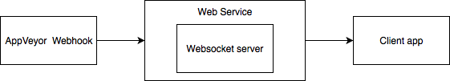
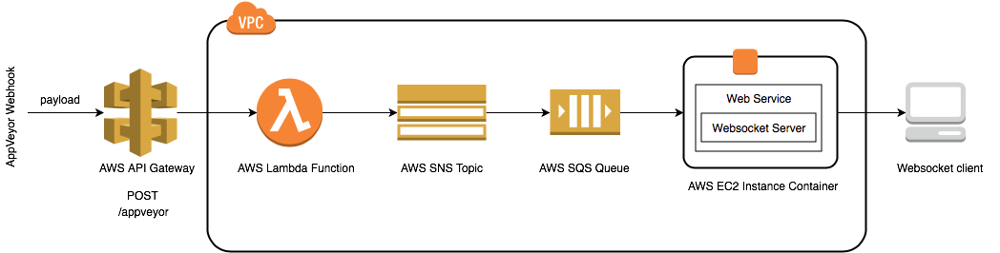

Overview
This article discusses how to setup and run a web service, written in .NET Core, using Docker, hosted on AWS. The diagram below provides a high level overview of the system we are going to implement.
The article has been written with the assumption that development will happen on macOS and the following frameworks have been installed,
- Docker - https://www.docker.com/get-started
- Visual Studio - https://visualstudio.microsoft.com
- AWS command line tools - https://aws.amazon.com/cli/
The full source code for this article's code excerpts can be found in the git repository, https://github.com/daviddw/aws-ws
Installing AWS CLI on macOS
Amazon provide steps for installing their CLI on their website, https://docs.aws.amazon.com/cli/latest/userguide/cli-install-macos.html, however, I found that I needed some minor changes to their suggested commands. The commands I ran to install AWS CLI on macOS are shown below,
Configuring AWS CLI on macOS
Amazon provide steps for configuring their CLI on their website, https://docs.aws.amazon.com/cli/latest/userguide/cli-chap-welcome.html, but for convenience I have included the configuration command below,
Creating the web service with .NET Core
Using Visual Studio, create a new project and select the "ASP.NET Core Empty" template.
The Visual Studio template will create a minimal web service configured to run on port 3000.
Our web service, as shown in the high level overview diagram, comprises of a web socket server, which will forward any data sent to our web service by the AppVeyor webhook. To add web socket support to the web service we need to add the following code,
Running the web service should now allow a websocket client to connect on the address,
Running the web service in a Docker image
Now we have our web service up and running, the next step is to containerise the service. To do this, we first need to create a Dockerfile, which describes our container.
Next we build the Docker image,
Once the Docker image is build, we can run a container with the image, using the following command,
- --name container repository/image:tag - creates a new container with the name 'container', using the image 'repository/image_name:tag'
- -p 3000:3000 - maps container port 3000 to host machine port 3000
As before, we should be able connect to the web service's websocket server, (which is now running in a container), on the address,
Publishing a Docker image to Docker Hub
Docker Hub is a cloud-based registry service, that provides a centralised location for container image distribution and change management, https://hub.docker.com.
Before you can publish a container image to Docker Hub you will need to have created an account and repository.
Once you have created an account and repository, to push an image to Docker Hub, you use the following command,
Hosting the web service on AWS
Now that we have our web service running in a Docker container, then next step is to get it running in AWS.
The diagram below shows the architecture of our example web service hosted on AWS.
The example web service works as follows,
- When a build on AppVeyor is triggered, AppVeyor POSTs a JSON document to http://<hostname>/appveyor on our public HTTP API, hosted by the AWS API Gateway service
- Receiving the POST triggers an AWS lambda function, which publishes the JSON document to an AWS SNS topic
- The SNS topic then pushes the JSON document to our subscribed AWS SQS queue
- The web socket server polls the AWS SQS queue, retrieves the JSON document and sends it on to all the connected web socket clients
Creating an AWS SQS Queue and an AWS SNS Topic
The following Cloudformation creates a queue with default properties,
More information on how to customise a queue can be found in Amazon's SQS Cloudformation guide, https://docs.aws.amazon.com/AWSCloudFormation/latest/UserGuide/aws-properties-sqs-queues.html
And the following Cloudformation creates a topic with default properties,
More information on how to customise a topic can be found in Amazon's SNS Cloudformation guide, https://docs.aws.amazon.com/AWSCloudFormation/latest/UserGuide/cfn-reference-sns.html
We then want our queue to subscribe to our topic in order to for our queue to receive any message that are published to our topic. The following Cloudformation will subscribe our queue to our topic,
Creating a Lambda Function with .NET Core
Using Visual Studio, create a new project and select the "Class Library" template, under .NET Core.
The Visual Studio template will create an empty .NET Core class library. Pay attention to the assembly, namespace, class and method names, as the lambda's handler signature is comprised of all four, i.e.,
Our example lambda function is very simple. As shown in the architecture diagram above, the lambda receives an HTTP POST request from the API gateway, extracts the request's body, and publishes the request's body to our SNS topic. To provide this functionality the following code should be added to the empty class library project,
Setting up an API Gateway and Lambda with AWS SAM
The AWS Serverless Application Model (SAM) is a new specification that makes it easy to deploy Serverless applications on AWS. It is possible with AWS SAM to specify Lambda functions and API Gateway APIs using AWS Cloudformation.
In order to inform Cloudformation that the template defines a a Serverless application you need to add the following line under the template format version,
The Cloudformation template below declares our Lambda function and creates an API Gateway event source that triggers the Lambda function on a POST to /appveyor.
In order to provide our Lambda function with the appropriate permissions we assign a policy. The awsLambdaPolicy policy below defines the permissions to allow logging to AWS CloudWatch and publishing to an SNS Topic.
To deploy the serverless app, we need to zip the .NET Core Lambda code, upload it to the S3 bucket, then run the following command,